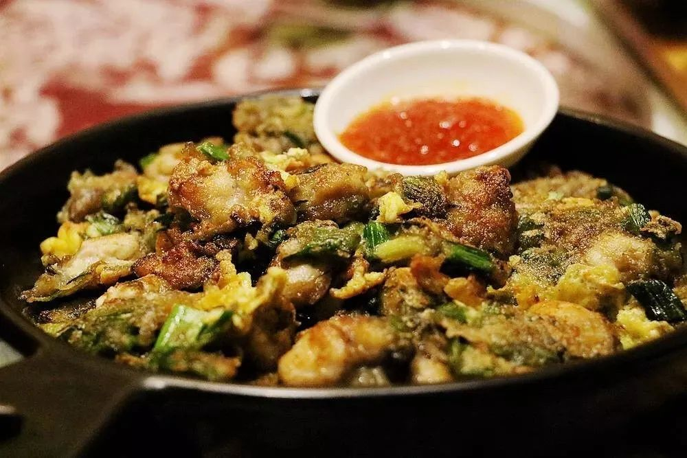

海蛎煎
海蛎煎是闽南特色小吃，选用新鲜海蛎，加入地瓜粉和鸡蛋煎制，外酥里嫩，鲜美多汁。 这道菜色泽金黄，海蛎鲜嫩，地瓜粉Q弹，鸡蛋香酥，是福建沿海地区的传统美食。 海蛎煎不仅味道鲜美，而且营养丰富，是闽南人家常菜也是街头小吃，深受人们喜爱。
鲜美多汁
外酥里嫩
口感丰富
营养丰富
15
准备时间(分钟)
10
烹饪时间(分钟)
2-3
份量(人)
闽南特色
海蛎煎是闽南地区的传统小吃，尤其在厦门、泉州、漳州等地极为流行。福建沿海盛产优质海蛎（牡蛎），为这道菜提供了最好的食材。海蛎煎不仅是家常菜，也是街头巷尾常见的小吃，体现了闽菜擅长海鲜烹饪和注重原汁原味的特点。
主要食材
- 新鲜海蛎 200克
- 地瓜粉 100克
- 鸡蛋 2个
- 青蒜 2根
- 香菜 适量
- 甜辣酱 2汤匙
- 酱油 1汤匙
- 食用油 适量
- 盐 适量
- 白胡椒粉 少许
营养成分（每100克）
- 热量：180千卡
- 蛋白质：12.5克
- 脂肪：8.2克
- 碳水化合物：15.8克
- 锌：15.2毫克
- 钙：85毫克
- 铁：5.8毫克
- 钠：320毫克
详细做法步骤
- 将新鲜海蛎洗净，去除碎壳和杂质，沥干水分。
- 青蒜洗净，切成细末；香菜洗净切段备用。
- 在地瓜粉中加入适量水，调成糊状，不要太稀也不要太稠。
- 将海蛎放入地瓜粉糊中，加入青蒜末、盐和白胡椒粉，轻轻搅拌均匀。
- 鸡蛋打入碗中，搅散备用。
- 平底锅加热，倒入适量食用油，油热后倒入海蛎糊。
- 用铲子将海蛎糊摊平，成圆饼状，中小火煎制。
- 煎至底面定型金黄后，翻面继续煎另一面。
- 待两面都煎至金黄色时，倒入打散的鸡蛋液，均匀淋在海蛎煎上。
- 煎至鸡蛋凝固，再次翻面略煎即可出锅。
- 将煎好的海蛎煎装盘，撒上香菜段，配甜辣酱和酱油食用。
烹饪小贴士
- 选择新鲜的海蛎，肉质饱满，没有异味
- 清洗海蛎时要轻柔，避免弄破海蛎
- 地瓜粉糊的浓稠度要适中，太稀不易成型，太稠影响口感
- 煎制时火候要控制好，中小火慢煎，避免外糊里生
- 翻面时要小心，保持海蛎煎的完整性
- 鸡蛋液要均匀淋上，增加香气和营养
- 甜辣酱是海蛎煎的灵魂搭档，不可省略
- 可以根据个人喜好加入其他蔬菜，如胡萝卜丝、洋葱丝等
历史与文化
海蛎煎是闽南地区的传统小吃，历史悠久。在福建沿海，海蛎是常见的水产品，当地人发明了这种简单又美味的烹饪方法。最初是渔民的家常菜，后来逐渐发展成为街头小吃和餐厅菜品。
在闽南地区，海蛎煎是家家户户都会做的家常菜，也是节日和待客的常见菜品。它体现了闽菜"原汤化原食"的理念，最大限度地保留了海蛎的鲜味，是闽南饮食文化的重要组成部分。